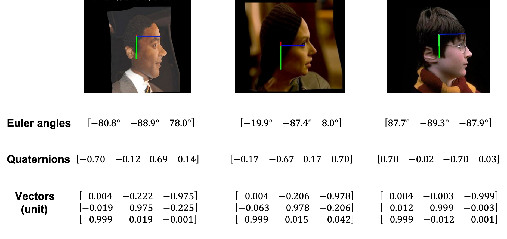

Winter Conference on Applications of Computer Vision (WACV) 2021

Abstract
This paper proposes to use the three vectors in a rotation matrix as the representation in head pose estimation and develops a new neural network based on the characteristic of such representation. We address two potential issues existed in current head pose estimation works:
1. Public datasets for head pose estimation use either Euler angles or quaternions to annotate data samples. However, both of these annotations have the issue of discontinuity and thus could result in some performance issues in neural network training. 2. Most research works report Mean Absolute Error (MAE) of Euler angles as the measurement of performance. We show that MAE may not reflect the actual behavior especially for the cases of profile views. To solve these two problems, we propose a new annotation method which uses three vectors to describe head poses and a new measurement Mean Absolute Error of Vectors (MAEV) to assess the performance. We also train a new neural network to predict the three vectors with the constraints of orthogonality. Our proposed method achieves state-of-the-art results on both AFLW2000 and BIWI datasets. Experiments show our vector-based annotation method can effectively reduce prediction errors for large pose angles.
@article{cao2020vector,
title={A Vector-based Representation to Enhance Head Pose Estimation},
author={Cao, Zhiwen and Chu, Zongcheng and Liu, Dongfang and Chen, Yingjie},
journal={arXiv preprint arXiv:2010.07184},
year={2020}
}